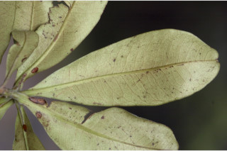
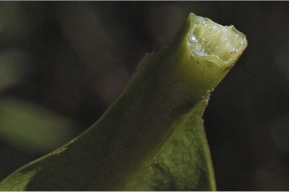
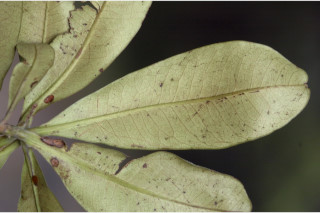
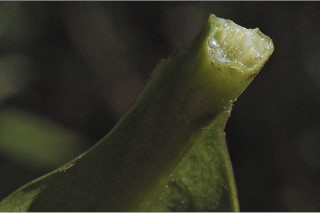

Botanical descriptions:
ಸಸ್ಯದ ವೈಜ್ಞಾನಿಕ ವಿವರ:
Botanical descriptions:
மரங்களின் பண்புகள்:
Habit:
ಪ್ರಕೃತಿ :
Habit:
வளரியல்பு:
Large trees, up to 35 m tall.
35 ಮೀ ಎತ್ತರದವರೆವಿಗೆ ಬೆಳೆಯುವ ಮಹಾವೃಕ್ಷಗಳು.
35 മീറ്ററോളം ഉയരത്തില് വളരുന്ന വന് മരങ്ങള്.
உயர்ந்த மரம், 35 மீ. வரை வளரக்கூடியது.
Trunk & Bark:
ಕಾಂಡ ಮತ್ತು ತೊಗಟೆ:
Trunk & Bark:
தண்டு மற்றும் மரப்பட்டை:
Bark smooth, often with scars of irregular flakes.
ತೊಗಟೆ ನಯವಾಗಿರುತ್ತದೆ. ಹಲವು ಸಂಧರ್ಭಗಳಲ್ಲಿ, ಅವ್ಯವಸ್ಥಿತವಾಗಿ ಮೂಡಲ್ಪಟ್ಟ ಚಕ್ಕೆ ರೂಪದ ಗುರುತುಗಳನ್ನೊಳಗೊಂಡಿರುತ್ತದೆ.
അവിടവിടെ ശലക്കങ്ങള് ഇളകിപ്പോയതിന്റെ അടയാളത്തോടുകൂടിയ മിനുസമാര്ന്ന പുറംതൊലി.
கிளைகள் “ஆப்ரவில் மாதிரி” முறையில் கிளைக்கும், சிறிய நுனிக்கிளைகள் தடித்தும், உரோமங்களற்றும் காணப்படும்.
Branches and Branchlets:
ಕವಲುಗಳು ಮತ್ತು ಕಿರುಕೊಂಬೆಗಳು:
Branches and Branchlets:
சாறு:
Branches with architecture of “Aubreville_model”, Branchlets stout, glabrous.
ಕೊಂಬೆಗಳು “ಆಬ್ರೆವಿಲ್ಲೆ” ಮಾದರಿಯ ವಿನ್ಯಾಸದಲ್ಲಿರುತ್ತವೆ. ಕಿರುಕೊಂಬೆಗಳು ಧೃಢವಾಗಿರುತ್ತವೆ
ശാഖകള് `ഒബ്രിവില്ലെ മാതൃക'യില് ക്രമീകരിച്ചിരിക്കുന്നതാണ്, ഉപശാഖകള് ഉറച്ചതും അരോമിലവുമാണ്.
வெண்மையான சாறு, சிறிதளவு சுரக்கும்.
Exudates:
ಜಿನುಗು ದ್ರವ:
Exudates:
இலைகள்:
Latex white, not profuse.
ಸಸ್ಯಕ್ಷೀರ ಶ್ವೇತ ಬಣ್ಣದಲ್ಲಿದ್ದು, ವಿರಳವಾಗಿರುತ್ತದೆ.
സ്രവം വെളുത്തതാണ്, ഏറെയില്ല.
இலைகள் தனித்தவை, மாற்றுஅடுக்கமானவை, சுழல் போன்று அமைந்தவை, நுனிக்கிளையில் இலைகள் கூட்டமாக மற்றும் நெருக்கமாகமைந்தவை; இலைக்காம்பு 0.5 செ.மீ. நீளத்திற்கு குறைவானது, தடிமனாகவும், உரோமங்களற்றது, குறுக்குவெட்டுத் தோற்றத்தில் பிளேனோகான்வக்ஸ்; இலை அலகு 6.5-19 X 1.8-7 செ.மீ., தலைகீழ் ஈட்டி அல்லது கரண்டி வடிவம், அலகின் நுனி மழுங்கிய அல்லது வட்டமானது (சிறிது கூர்மையாக சில மரங்களில் காணப்படும்), அலகின் தளம் ஆப்பு வடிவம் முதல் தண்டொட்டிக் கீழ்வளர்ந்து இலை விளிம்புடன் காணப்படும், அலகின் விளிம்பு முழுமையானது, கோரியேசியஸ், கீழ்பரப்பு உரோமங்களற்றது; மையநரம்பு இலையின் பரப்பிற்கு சமதளமானது, இரண்டாம் நிலை நரம்புகள் 12-18 ஜோடிகள்; மூன்றாம் நிலை நரம்புகள் வலைப்பின்னல் அமைப்பு கொண்டது.
Leaves:
ಎಲೆಗಳು:
Leaves:
மஞ்சரி / மலர்கள்:
Leaves simple, alternate, spiral, clustered at twig ends; petiole less than 0.5 cm long, stout, glabrous, planoconvex in cross section; lamina 6.5-19 x 1.8-7 cm, oblanceolate or spathulate, apex obtuse or rounded (slightly acuminate in young trees), base cuneate to decurrent, margin entire, coriaceous, glabrous; midrib flat above; secondary_nerves 12-18 pairs; tertiary_nerves reticulo-percurrent or broadly reticulate.
ಎಲೆಗಳು ಸರಳ,ಪರ್ಯಾಯ ಹಾಗೂ ಸುತ್ತು ಜೋಡನಾ ವ್ಯವಸ್ಥೆಯಲ್ಲಿದ್ದು, ಕುಡಿಕೊಂಬೆಗಳ ತುದಿಯಲ್ಲಿ ಗುಂಪಾಗಿರುತ್ತವೆ. ಎಲೆತೊಟ್ಟು 0.5 ಸೆಂ.ಮೀ ಗಿಂತ ಕಡಿಮೆ ಉದ್ದ, ರೋಮರಹಿತವಾಗಿದ್ದು ಅಡ್ಡಸೀಳಿದಾಗ ಸಪಾಟ ಪೀನಮಧ್ಯ ಆಕಾರವನ್ನು ಹೋಲುತ್ತದೆ; ಎಲೆ ಪತ್ರ 6.5-19 X 1.8- 7 ಸೆಂ.ಮೀ ಗಾತ್ರ ಹೊಂದಿದ್ದು, ಈಟಿ- ಬುಗುರಿ ಸಮ್ಮಿಶ್ರಾಕಾರ ಅಥವಾ ಚಮಚದಾಕಾರದಲ್ಲಿರುತ್ತದೆ; ಚೂಪಲ್ಲದ ಅಥವಾ ಗುಂಡಾದ ತುದಿ(ಸಣ್ಣ ಮರಗಳಲ್ಲಿಎಲೆ ಪತ್ರ ಕ್ರಮೇಣ ಚೂಪಗುವ ಸಣ್ಣ ತುದಿ ಹೊಂದಿರುತ್ತದೆ) ಹಾಗೂ ಬೆಣೆಯಾಕಾರದ ಬುಡವನ್ನು ಹೊಂದಿರುತ್ತದೆ.ಪತ್ರದ ಬುಡ ಭಾಗ ಕೆಲವು ವೇಳೆ ಕಾಂಡದವರೆವಿಗೂ ವಿಸ್ತಾರಗೊಂಡಿರುತ್ತದೆ. ಪತ್ರಗಳು ನಯವಾದ ಅಂಚು ,ತೊಗಲಿನಂತಹ ಮೇಲ್ಮೈಹೊಂದಿದ್ದು ರೋಮರಹಿತವಾಗಿರುತ್ತವೆ; ಮಧ್ಯನಾಳಗಳು ಪತ್ರದ ಮೇಲ್ಭಾಗದಲ್ಲಿ ಚಪ್ಪಟೆಯಾಗಿರುತ್ತದೆ.;12 - 18ಎರಡನೇ ದರ್ಜೆಯ ನಾಳಗಳಿದ್ದು, ಮೂರನೇ ದರ್ಜೆ ನಾಳಗಳು ಜಾಲಬಂಧ ವಿನ್ಯಾಸ ಹೊಂದಿದ್ದು ಎಲೆದಿಂಡಿಗೆ ಅಡ್ಡವಾಗಿ ಕೂಡುತ್ತವೆ ಅಥವಾ ವಿಶಾಲ ಜಾಲಬಂಧ ನಾಳವಿನ್ಯಾಸದಲ್ಲಿರುತ್ತವೆ.
ഇലകള് ലഘുവായതും, ഏകാന്തര ക്രമത്തില് വര്ത്തുളമായി, ശാഖകളുടെ അറ്റത്തായി കേന്ദ്രീകരിച്ചിരിക്കുന്നതുമാണ്; 0.5 സെ.മീ. നീളമുള്ള, അരോമിലവും ഉറച്ചതുമായ ഇലഞെട്ടിന്, കുറുകേയുള്ള ഛേദത്തില് ഒരു വശം പരന്നതും മറുവശം ഉരുണ്ടിരിക്കുന്നതുമായ ആകൃതിയോടുകൂടിയതുമാണ്; പത്രഫലകത്തിന് 6.5 മുതല് 19 സെ.മീ നീളവും 1.8 മുതല് 7 സെ.മീ വീതിയുള്ളതും, അപകുന്താകാരമോ കോരികയുടെ രൂപത്തോടു കൂടിയതാണ്, പത്രാഗ്രം ഉപകോണാഗ്രമോ വൃത്താകാരമോ ആണ് (ഇളം മരങ്ങളില് ലഘുവായ ദീര്ഘാഗ്രത്തോടുകൂടിയതാണ്), പത്രാധാരം ആപ്പിന്റെ ആകൃതിയില് നേര്ത്ത് വന്ന് തണ്ടിനെ പൊതിഞ്ഞിരിക്കുന്നതുമാണ്. അരികുകള് അവിഭജിതമാണ്, ചര്മില പ്രകൃതവും അരോമിലവുമാണ്; മുഖ്യസിര മുകളില് പരന്നാണിരിക്കുന്നത്; 12 മുതല് 18 ജോഡി ദ്വിതീയ ഞരമ്പുകള്; ത്രിതീയ ഞരമ്പുകള് പെര്കറന്റ് ജാലിതമോ വീതിയേറിയ ജാലികാ സിരാവിന്യാസത്തോടു്കൂടിയതോ ആണ്.
மஞ்சரி இலைக்கோணங்களில் அல்லது தண்டின் நுனியில் அமைந்த பேனிக்கிள், 8-10 செ.மீ. மெல்லிய உரோமங்களுடையது; மலர்கள் இருபாலானவை, வெள்ளை நிறம்.
Inflorescence / Flower:
ಪುಷ್ಪಮಂಜರಿ/ಹೂಗಳು:
Inflorescence / Flower:
கனி / விதை:
Inflorescence axillary or terminal panicles, 8-10 cm long, tomentose; flowers bisexual, white
ಹೂಗಳು ದ್ವಿಲಿಂಗಿ , ಶ್ವೇತ ಬಣ್ಣದವುಗಳಾಗಿದ್ದು ಅಕ್ಷಾಕಂಕುಳಿನ ಅಥವಾ ತುದಿಯಲ್ಲಿರುವ 8 ರಿಂದ 10 ಸೆಂ.ಮಿ. ಉದ್ದವುಳ್ಳ ಪುನರಾವೃತ್ತಿಯಾಗಿ ಕವಲೊಡೆಯುವ ಪುಷ್ಪಮಂಜರಿಯಲ್ಲಿರುತ್ತವೆ
രോമിലമായ പൂങ്കുലകള് 8 മുതല് 10 വരെ സെ.മീ. നീളമുള്ള, കക്ഷീയമോ ഉച്ഛരസ്ഥമോ ആയ പാനിക്കള് ആണ്; പൂക്കള് വെളുത്തതും ദ്വിലിംഗവുമാണ്.
உள்ளோட்டுத்தசைகனி (ட்ரூப்), தடித்தது, உருண்டை வடிவம், 3.8 செ.மீ. குறுக்களவு, ஒரு விதை கொண்டது.
Fruit and Seed:
ಕಾಯಿ /ಬೀಜ:
Fruit and Seed:
:
Drupe, woody, globose, 3.8 cm across, 1-seeded.
ಕಾಯಿಗಳು ಡ್ರೂಪ್ ಮಾದರಿಯಾಗಿದ್ದು, ಗುಂಡಾಕಾರವಾಗಿ, ದಾರುವಿನಂತಿದ್ದು,3.8 ಸೆಂ.ಮಿ. ಗಾತ್ರ ಹಾಗೂ ಒಂದು ಬೀಜವನ್ನೊಳಗೊಂಡಿರುತ್ತದೆ.
3.8 സെ.മീ. കുറുകേ വരുന്ന, ഉരുണ്ട ഫലം ഉറപ്പേറിയതും ഒറ്റ വിത്തോടു കൂടിയതുമായ അഭ്രകം (ഡ്രൂപ്പ്) ആണ്.
Literatures:
ಗ್ರಂಥ ಸೂಚಿ:
Literatures:
சான்று ஏடு:
Beddome, Fl. Sylv. 1: 60. 1870; Gamble, Fl. Madras 1: 261. 1997 (re. ed); Mohanan and Sivadasan, Fl. Agasthymala 179. 2002; Mohanan and Henry Fl. Thiruvananthapuram 128. 1994.
Beddome, Fl. Sylv. 1: 60. 1870; Gamble, Fl. Madras 1: 261. 1997 (re. ed); Mohanan and Sivadasan, Fl. Agasthymala 179. 2002; Mohanan and Henry Fl. Thiruvananthapuram 128. 1994.
Beddome, Fl. Sylv. 1: 60. 1870; Gamble, Fl. Madras 1: 261. 1997 (re. ed); Mohanan and Sivadasan, Fl. Agasthymala 179. 2002; Mohanan and Henry Fl. Thiruvananthapuram 128. 1994.
Beddome, Fl. Sylv. 1: 60. 1870; Gamble, Fl. Madras 1: 261. 1997 (re. ed); Mohanan and Sivadasan, Fl. Agasthymala 179. 2002; Mohanan and Henry Fl. Thiruvananthapuram 128. 1994.
 


